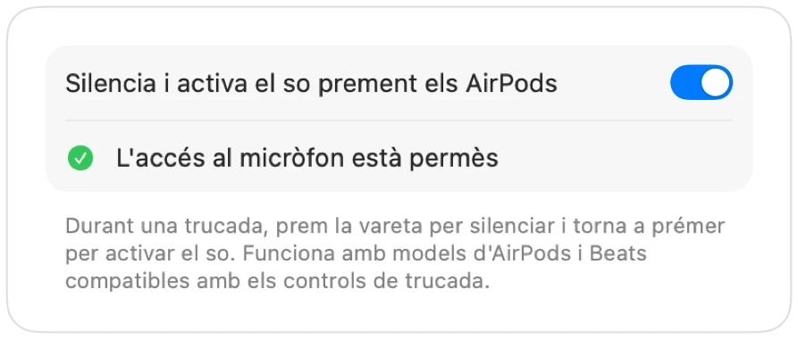

Els AirPods no silencien al teu Mac? Aquí tens la solució
macOS permet silenciar una trucada prement la vareta dels AirPods, però només si l'app de la trucada ho admet. Moltes no ho fan, incloent-hi Chrome i les videotrucades web. Prems, sents un so breu d'error, veus el missatge «No es pot controlar el micròfon» i a la trucada et continuen sentint.
Muffle afegeix aquesta compatibilitat a qualsevol app. Rep la premuda, silencia el micròfon del Mac i reprodueix el so habitual de silenciament.
Fes que prémer els AirPods silenciï qualsevol app
- 1
Instal·la Muffle i permet l'accés al micròfon. macOS només envia les premudes a les apps que poden utilitzar el micròfon.
- 2
Comprova que «Silencia i activa el so prement els AirPods» estigui activat a la Configuració de Muffle.
- 3
Entra a una trucada. Prémer només silencia mentre una app estigui utilitzant el micròfon.
- 4
Prem la vareta una vegada per silenciar i torna a prémer per activar el so.

- Fora de les trucades, prémer continua reproduint i posant en pausa la música com sempre.
- Si els teus AirPods utilitzen una premuda diferent per als controls de trucada, comprova la configuració dels AirPods a la Configuració del sistema.
Preguntes
Per què el meu Mac reprodueix un so d'error en prémer els AirPods?
L'app des d'on fas la trucada no és compatible amb la premuda per silenciar dels AirPods, de manera que macOS la rebutja. Amb Muffle obert, la premuda silencia el micròfon.
Quins AirPods admeten la premuda per silenciar?
AirPods Pro, AirPods 3 i posteriors, i AirPods Max, a més dels models de Beats amb controls de trucada.